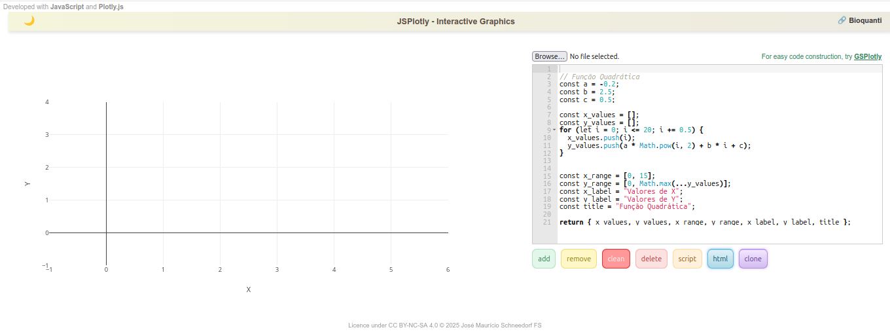

4 JSPlotly
JSPlotly é um ambiente baseado em JavaScript para criação de visualizações científicas interativas e objetos programáveis diretamente no navegador. Na prática, um aplicativo pra criar objetos virtuais para ensino-aprendizagem e pesquisa. Com ele é possível criar gráficos 2D e 3D, tabelas, diagramas, fluxogramas, realizar cálculos, produzir objetos tridimensionais, animações, simulações, jogos, sonorização, objetos multimídia (animação+som), e prototipagem experimental (dispositivos móveis, placas microcontroladoras).
Ainda que possibilite isso tudo (e um pouco mais…), apresenta-se como um pequeno arquivo HTML pra ser carregado em qualquer navegador de internet. Assim, JSPlotly não depende de sistema operacional (Windows, Linux, Android, iOS) e nem de dispositivo (desktop, notebook, tablet, celular). Por ser pequenino e com atributo HTML, pode-se compartilhar o programa e o objetos produzidos por qualquer meio físico ou digital, incluindo redes sociais.
O JSPlotly é livre !!! Tanto pra baixá-lo como para personalizá-lo, e garantido por sua licença CC BY-NC 4.0. Assim, você pode utilizá-lo, copiá-lo, distribui-lo e mesmo adaptá-lo para fins não comerciais, desde que mencione o autor.
4.1 O site Bioquanti
O aplicativo, suas características, seu modo de uso e mais de uma centena de objetos de aprendizagem interativos estão abertamente disponíveis junto ao website Bioquanti. O site é uma iniciativa para propagar a ideia de se utilizar código de programação voltados para a construção de objetos didáticos para conteúdos curriculares, tanto para o ensino básico como para o ensino superior e pesquisa científica. Numa “frasezinha” de efeito: códigos para conteúdos.
4.2 Botando a mão na massa !
Agora, voltando ao JSPlotly. Quer ver como é simples utilizá-lo ? Dê uma olhada na tela única do aplicativo abaixo.

Agora vamos à parte divertida !!!
Segue abaixo novamente a mesma tela do JSPlotly. Aparentemente é igual à anterior. Mas quer saber a diferença ? Clique na imagem e você será direcionado ao aplicativo presente no Bioquanti, um site desenvolvido para apresentar códigos para conteúdos em ensino superior e básico, e com vários exemplos de objetos pro JSPlotly..
4.3 Redimensionando a página para conforto visual do JSPlotly
Observe que o aplicativo apresenta-se junto à barra lateral, o que acaba causando sua redução visual e mesmo omissão de alguns detalhes. Para melhor conforto e trabalho com o JSPlotly, você pode clicar no ícone do canto superior esquerdo ou central da página (a depender do dispositivo), experimentará o encolhimento da barra lateral, e consequente readequação visual do JSPlotly. Assim, poderá ajustar como deseja que o JSPlotly seja apresentado. Isso é útil quando se quer explorar o aplicativo visualizando-o de modo mais confortável.
Adicionalmente, a disposição esquerda/direita também adequa-se ao tipo de dispositivo utilizado. Se for um celular, por exemplo, ela poderá mudar para cima/embaixo, bastando-se colocá-lo na vertical, ou esquerda/direita se o dispositivo ficar na horizontal (com permissão para girar a tela, claro).